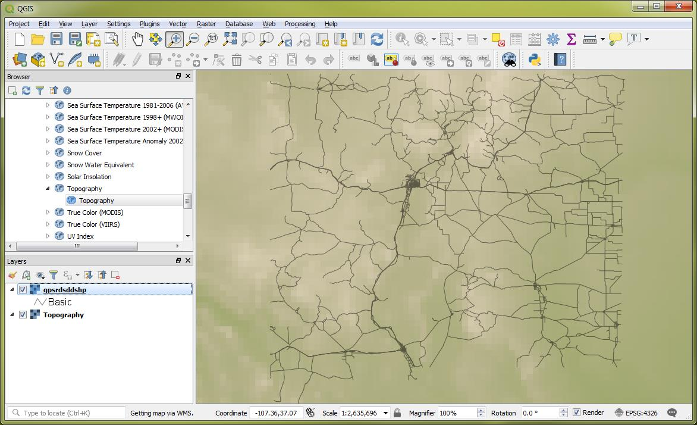
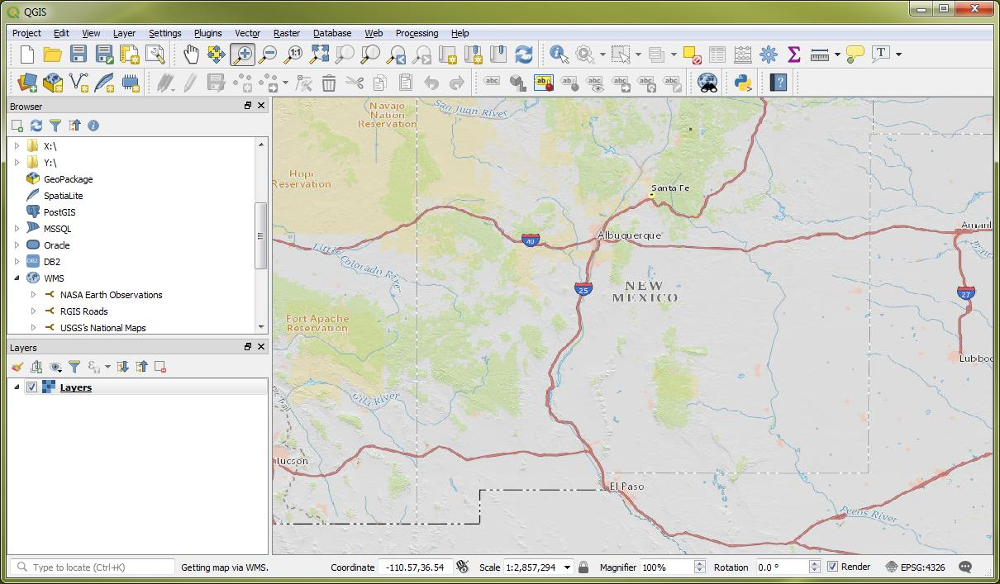
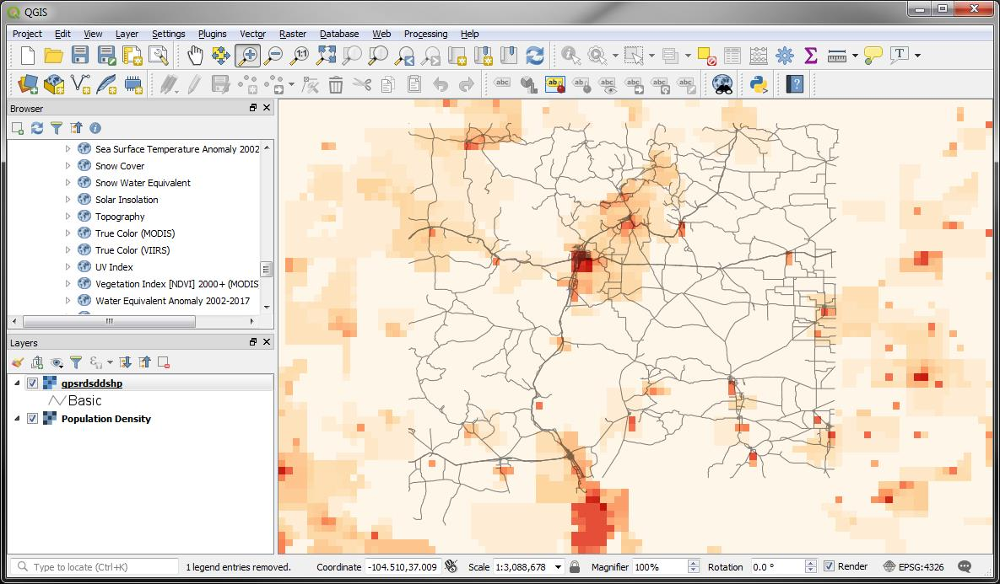
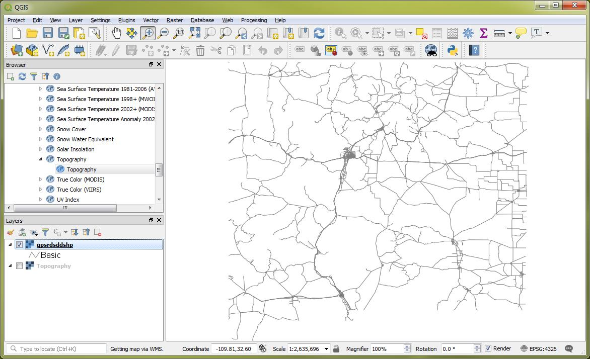
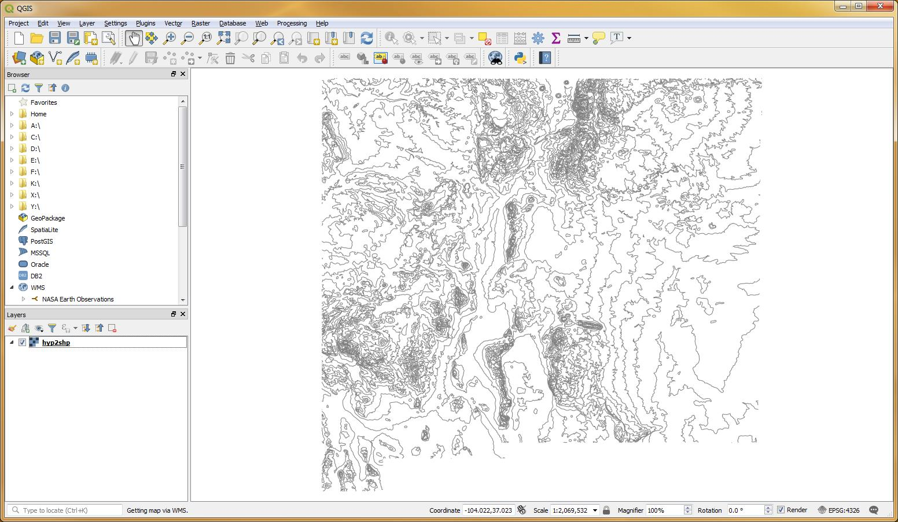
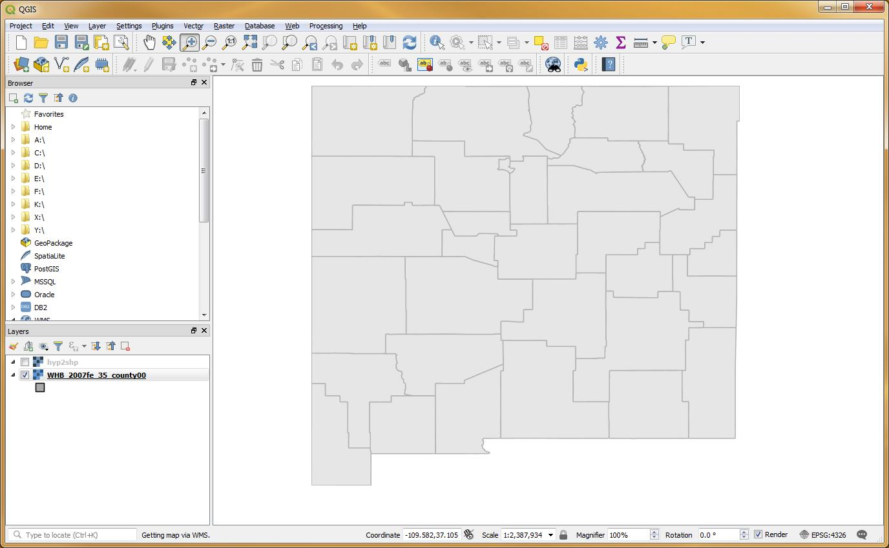

NASA Earth Observations (Topology)
https://neo.sci.gsfc.nasa.gov/wms/wms?SERVICE=WMS&REQUEST=GetCapabilities;

USGS’s National Maps (Layers)
https://basemap.nationalmap.gov:443/arcgis/services/USGSTopo/MapServer/WmsServer?

NASA Earth Observations (Population)
https://neo.sci.gsfc.nasa.gov/wms/wms?SERVICE=WMS&REQUEST=GetCapabilities

RGIS Roads (gpsrdsddshp)
http://gstore.unm.edu/apps/rgis/datasets/ab17adb4-0992-436b-8ae4-575d8405d188/services/ogc/wms?VERSION=1.0.0&REQUEST=GetFeature&TYPENAME=RDSGPS2012v1&SRSNAME=EPSG:26913;

RGIS 500 Ft Countours Intervals (hyp2shp)
"http://gstore.unm.edu/apps/rgis/datasets/c0324950-6f96-49e4-a638-da7423c71ec3/services/ogc/wms?SERVICE=WFS&VERSION=1.0.0&REQUEST=GetFeature&TYPENAME=hyp2shp&SRSNAME=EPSG:4269"

GEOGraphy x85L Class Server (WHB_2007fe_35_county00)
"http://gstore.unm.edu/apps/rgis/datasets/d2802611-609c-44e2-951f-cb3f713eac07/services/ogc/wfs?SERVICE=WFS&VERSION=1.0.0&REQUEST=GetFeature&TYPENAME=tl_2010_35001_areawater&SRSNAME=EPSG:4269"
